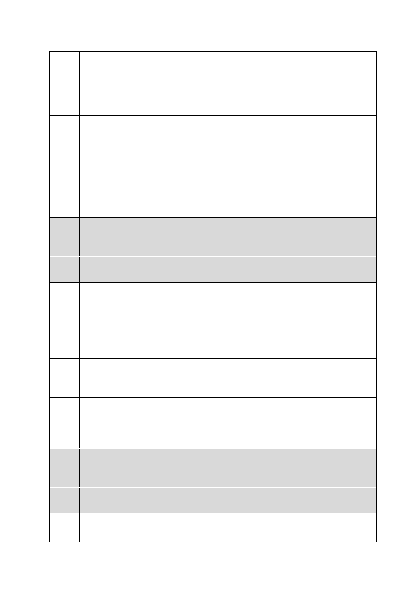

臺北市都市計畫委員會 公民或團體陳情意見綜理表
案
名
市府
回應
委員
會議
決議
編
號
陳情
理由
建議
辦法
市府
回應
委員
會議
決議
編
號
陳情
理由
「變更臺北市信義區逸仙段二小段 33 地號等 21 筆土地（原臺北機廠）
工業區為創意文化專用區、特定專用區、道路及綠地用地主要計畫案」
及「擬定臺北市信義區逸仙段二小段 33 地號等 21 筆土地（原臺北機
廠）創意文化專用區、特定專用區、道路及綠地用地細部計畫暨劃定
都市更新地區計畫案」
一、有關臺北機廠再利用之定位及鐵道文化資產之保留方式，詳如編
號 1 市府回應內容。
二、有關市民參與規劃過程之建議，詳如編號 12 市府回應說明一。
三、有關本計畫西側南北向道路設置理由，詳如編號 25 市府回應說
明一。
四、本計畫已重新考量園區規劃的完整性、鐵道文化資產的保存、及
與臺北文化體育園區的銜接，調整主要計畫及細部計畫內容，詳如編
號 35 市府回應說明四。
內容同編號 1。
53 陳情人
蕭○菁
依本案土地使用計劃來看，擬作為特定專用區（一）及特定專用區（二）
面積共為 93,928 平方公尺，佔全區面積約 55. 14 %，均可做商辦、
商場、休閒設施等開發。若再加上文化體育園區的商業休閒遊憩設施
21,247 平方公尺，這兩塊地方的商業設施將超過 11 公頃。巨蛋體育
館聲稱可容納 4 萬人，若多項活動同時舉行時，附近居民將承受莫
大的環境（噪音、空污、擁擠 … ）及交通衝擊。
此項開發案與文化體育園區重疊性過高，且未充份考量附近居民於開
發完成後可能承受的環境及交通衝擊。故要求北市府都發局將此案退
回原申請單位台鐵，要求重新擬定，朝保留全區古蹟最低密度的開發。
一、有關臺北機廠再利用之定位及鐵道文化資產之保留方式，詳如編
號 1 市府回應內容。
二、有關附近區域交通、環境污染問題之處理，詳如編號 21 市府回
應內容。
內容同編號 1。
54 陳情人
黃○茂
1.回饋土地位置與地目應與文資重合
對於台北機廠因都市計畫使用分區變更所需回饋之土地，建議應集中
第 79 頁/共 154 頁